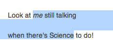
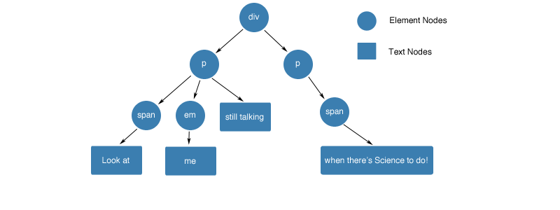

Ranges and Selections¶
A brief introduction to DOM ranges and selections. Having a solid understanding of these will make developing for the rich text editor a lot more pleasant.
Ranges¶
At their core ranges simply describe a section of the page from one point in the DOM to another.
To illustrate we’ll use an imaginary bit of selected text in the browser, which looks something like this:

We are going to try to describe the selection we see here as a range, going from the beginning of the word “me” to the end of the word “Science”. Keep in mind that ranges are not inherently visible. They give us a way of describing where to start and end when manipulating the DOM across elements.
If we just worked with text, we could count characters (including the newline) and say that our range starts at 8 and ends at 45. While this works, it is not always enough information. Let’s look at the HTML that was used to create this text:
<div><p><span>Look at </span><em>me</em> still talking</p><p><span>when there's Science to do!</span><p></div>
Now our text approach is in trouble. Our end of 45 is still ok, but the beginning could be inside the span, between the span and the em, or at the beginning of the em. Simply saying 8 does not convey enough information.
These differences become especially important when dealing with block elements. The end of the first paragraph and beginning of the next look contiguous in HTML, but to the user they appear separated by a new line.
Before we can look into how we can solve it. Let’s break this HTML down into the pieces we can access from javascript. The DOM is a collection of nodes, there are two types that we care about:
Nodes that hold text. We will call those text nodes. And nodes that hold other nodes. We will call those element nodes.
someTextNode.textValue // node text
someElementNode.childNodes // children
When combined these form sort of a tree. For our example above:

Or, in a more flat representation:
Armed with this knowledge, we can now understand the four pieces of data we need to describe a range:
startContainer- node of the range startstartOffset- offset in the startContainerendContainer- node of the range endendOffset- offset in the endContainer
We can also see that the offset can have two different meanings. For a text node it will be the index of the character we want. For an element node, it will be the index of a child node.
So let’s solve the puzzle of our example. The end is still quite simple:
endContainer- textNode (“when there’s Science to do!”)endOffset- 20 (to the end of “Science”)
For the beginning we still have a few options. We can either use the element nodes right around our selection point. Or we can go into the text nodes again.
| startContainer | startOffset | Resulting Range Position |
|---|---|---|
span |
1 | End of the span |
p |
1 | Between the span and em |
em |
0 | Beginning of the em |
span text
(“Look at ”) |
8 | End of the span’s child text node |
em text
(“me”) |
0 | Beginning of the em’s text node |
Which you choose will depend on your situation.
Selections¶
A selection is simply a range made visible to the user. The distinction is still important. You can have as many ranges as you want, but you can only have one selection.
In other words, the selection holds a single range. When you select a new piece of text, this single range changes to match your selection. Conversely, when you programmatically ask the browser to select a range, the old selection is lost and your new one is displayed.
The range in the current selection can be accessed without having to
retrieve the range from the selection. To do so you must use the
anchorNode, anchorOffset, focusNode, and focusOffset
attributes.
The anchor node and offset is the point of the selection where the user started selecting. The focus node and offset describe the moving part of the selection.
Note
There is one selection per window and it contains a single range.